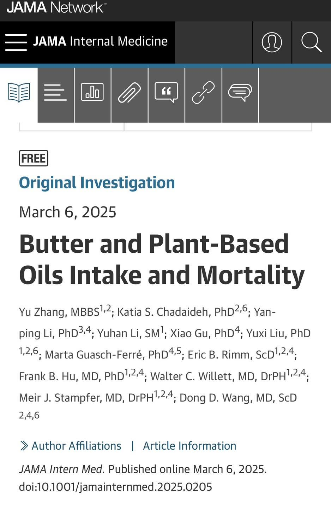

Heart tissue is naturally resistant to cancer. Scientists are finally starting to understand why.

Joel Kahn: soybean and canola oils linked to lower death risk than animal fats
Louis shares Joel Kahn's brief post reacting to Harvard cohort data (Nurses' Health Study and HPFS) that plant oils, even soybean and canola, were associated with lower death risk than animal fats such as butter. The post gives no numbers.